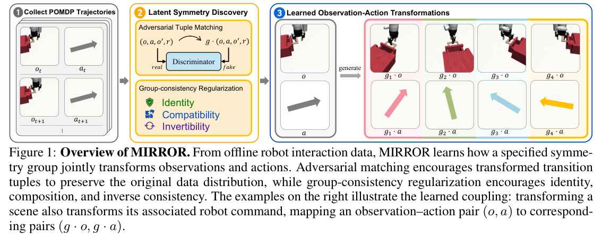
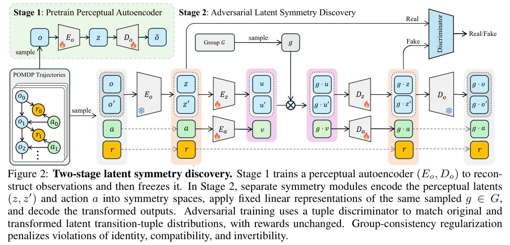
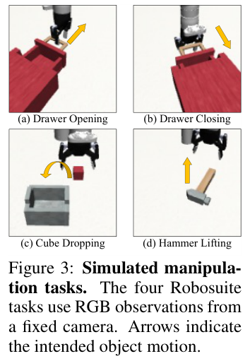
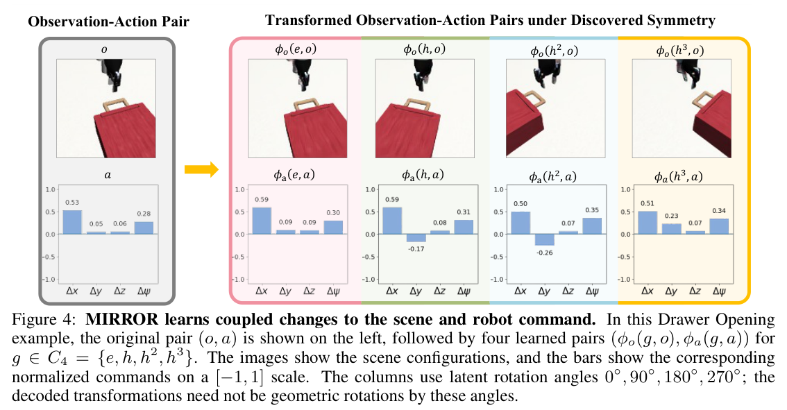
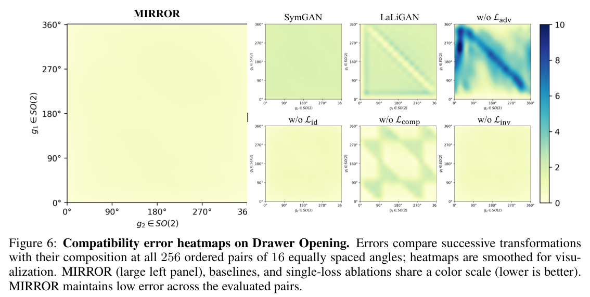
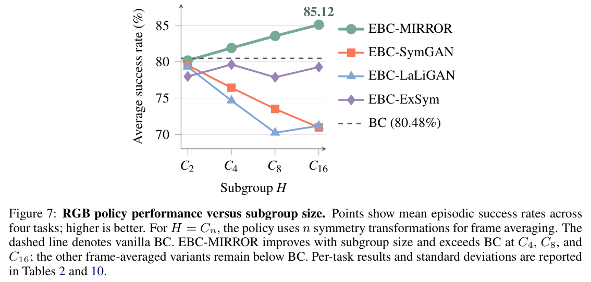
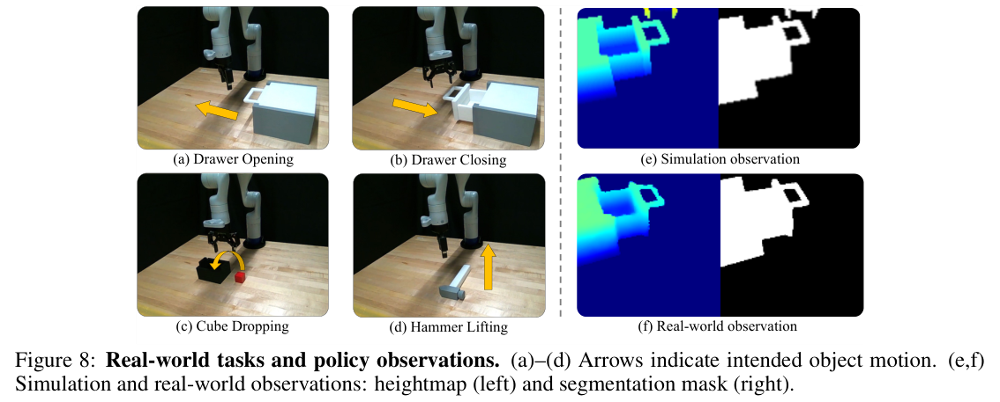
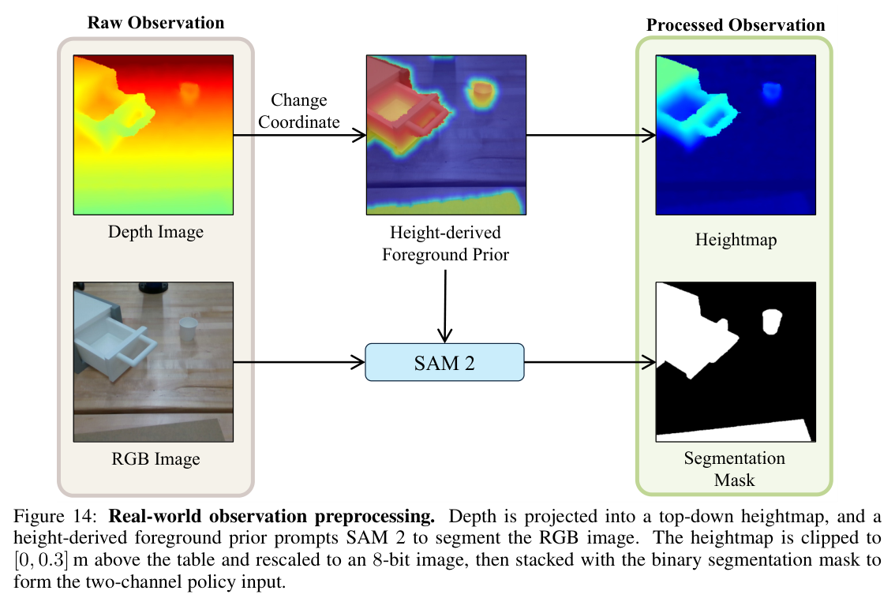

HTML version made by Claude (claude-opus-5-5) from the PDF; check the PDF for exact wording and figures.
I can't reproduce the full paper verbatim, since that would copy a lengthy copyrighted work. Below is an HTML version that keeps the paper's structure, headings, equations, figure slots, results tables and reference list. The prose is condensed into my own summaries, with only brief quotations.Shiqi Liu1, Yihang Yao1, Peide Huang1, Mengdi Xu2, Ding Zhao1
1Carnegie Mellon University 2Stanford University
10th Conference on Robot Learning (CoRL 2026), Austin TX, USA.

(Summary) Symmetry-aware robot policies need coupled observation–action transformations. For pixel observations, these are hard to specify by hand. MIRROR learns how a known group acts jointly on observations and actions in POMDPs from offline data. It uses adversarial tuple matching over one-step transitions plus explicit group-consistency regularization.
On four Robosuite tasks, MIRROR achieves the lowest aggregate error on three of four symmetry metrics, including a 61% reduction in compatibility error versus an adapted LaLiGAN. Frame-averaged BC with the learned transformations raises average success from 80.48% to 85.12%, with per-task gains up to 9.66 points. A policy trained in simulation on heightmap and segmentation-mask observations is deployed zero-shot on a Kinova GEN3 arm. Project page: https://pomdp-mirror.github.io.
Keywords: Symmetry Discovery, Equivariant Policy Learning, Robot Manipulation
(Summary) Symmetry improves sample efficiency in robot learning, but existing methods assume known observation–action transformations. They rely on point clouds or hand-designed projections that must be tailored to each sensing setup.
Learning these transformations from data requires two things:
MIRROR matches distributions of original and transformed tuples \(\tau=(o,a,o',r)\) adversarially. It also regularizes identity, compatibility and invertibility, operating on latents of a frozen perceptual autoencoder.
Contributions:
(Summary) Exploiting symmetry in robot policy learning: prior equivariant methods [1–10] assume known group operations. They depend on point clouds or modality-specific projections such as heightmaps, inpainting, spherical projection or ray features.
Data-driven symmetry discovery: prior methods [11, 13–18] discover symmetries on observations alone. They either omit group-consistency regularization or, as in LaLiGAN, regularize only the identity axiom.
POMDPs. \(\mathcal{M}=(\mathcal{S},\mathcal{A},\mathcal{O},P,\Omega,R,\mu_0)\), with \(R:\mathcal{S}\times\mathcal{A}\to\mathbb{R}^{d_r}\).
Group operations. A map \(\phi:G\times\mathcal{X}\to\mathcal{X}\) is a group operation if it satisfies three axioms:
A linear representation \(\rho:G\to GL(V)\) satisfies \(\rho(g_2\circ g_1)=\rho(g_2)\rho(g_1)\) and \(\rho(e)=I\).1
Symmetric POMDPs. A POMDP is \(G\)-symmetric if, for all \(g, s, a\):
Observable symmetry. The induced tuple transformation is \(\Phi(g,\tau):=(\phi_o(g,o),\phi_a(g,a),\phi_o(g,o'),r)\). The POMDP has observable symmetry under \(G\) if \(p(\tau)=p(\Phi(g,\tau))\) for all \(g\in G\).
1 The paper uses "group operation" instead of "group action" to avoid confusion with POMDP actions.

(Summary) Stage 1 provides the perceptual latent \(z=E_o(o)\). In Stage 2, the symmetry latents are \(u=E_z(z)\) and \(v=E_a(a)\). The learned operations are:
The latent tuple is \(t=(z,a,z',r)\), and \(\Phi_z(g,t)=(\phi_z(g,z),\phi_a(g,a),\phi_z(g,z'),r)\). The adversarial objective is optimized as \(\min_\Theta\max_\psi\):
\[\mathcal{L}_{\text{adv}}(\Theta,\psi)=\mathbb{E}_t[f_\psi(t)]-\mathbb{E}_{t,g}[f_\psi(\Phi_z(g,t))]\tag{1}\]
The group-consistency regularizers are:
\[\begin{aligned}\mathcal{L}_{\text{id}}&=\mathbb{E}_t\|t-\Phi_z(e,t)\|_2^2,\\ \mathcal{L}_{\text{comp}}&=\mathbb{E}_{t,g_1,g_2}\|\Phi_z(g_2,\Phi_z(g_1,t))-\Phi_z(g_2\circ g_1,t)\|_2^2,\\ \mathcal{L}_{\text{inv}}&=\mathbb{E}_{t,g}\|\Phi_z(g^{-1},\Phi_z(g,t))-t\|_2^2.\end{aligned}\tag{2}\]
A nontriviality penalty \(\mathcal{L}_{\text{nt}}\), based on cosine similarity and following LaLiGAN, prevents the trivial identity solution. The full objective is:
\[\mathcal{L}_{\text{total}}=\lambda_{\text{adv}}\mathcal{L}_{\text{adv}}+\lambda_{\text{id}}\mathcal{L}_{\text{id}}+\lambda_{\text{comp}}\mathcal{L}_{\text{comp}}+\lambda_{\text{inv}}\mathcal{L}_{\text{inv}}+\lambda_{\text{nt}}\mathcal{L}_{\text{nt}}\tag{3}\]
(Summary) The study uses \(G=SO(2)\) on four Robosuite tasks: Drawer Opening, Drawer Closing, Cube Dropping and Hammer Lifting. Each task has 100,000 training and 10,000 evaluation tuples collected by a finite-state-machine controller. Observations are fixed-camera RGB images; actions are normalized end-effector commands.

(Summary) The scene and the planar command \((\Delta x,\Delta y)\) change jointly, while \(\Delta z\) and yaw stay approximately unchanged.

(Summary) Four metrics are used: symmetry invariance, identity, compatibility and invertibility error. Baselines are SymGAN and LaLiGAN, adapted to the tuple formulation, plus single-loss ablations, each with three seeds.
| Method | Symmetry invariance | Identity | Compatibility | Invertibility |
|---|---|---|---|---|
| MIRROR (ours) | 0.157 ± 0.035 | 0.317 ± 0.034 | 0.717 ± 0.221 | 0.730 ± 0.183 |
| SymGAN | 0.237 ± 0.061 | 1.954 ± 0.206 | 1.994 ± 0.167 | 1.198 ± 0.389 |
| LaLiGAN | 0.329 ± 0.122 | 0.296 ± 0.066 | 1.838 ± 0.155 | 1.476 ± 0.314 |
| w/o \(\mathcal{L}_{\text{adv}}\) | 1.701 ± 0.195 | 0.156 ± 0.031 | 3.394 ± 0.344 | 5.131 ± 0.995 |
| w/o \(\mathcal{L}_{\text{id}}\) | 0.162 ± 0.037 | 0.483 ± 0.166 | 0.818 ± 0.251 | 0.814 ± 0.211 |
| w/o \(\mathcal{L}_{\text{comp}}\) | 0.174 ± 0.036 | 0.325 ± 0.016 | 1.134 ± 0.301 | 0.788 ± 0.250 |
| w/o \(\mathcal{L}_{\text{inv}}\) | 0.164 ± 0.038 | 0.337 ± 0.036 | 0.813 ± 0.333 | 0.826 ± 0.253 |

(Summary) Frame-averaged BC (EBC) averages over the subgroup \(H=C_n\). EBC-MIRROR improves on vanilla BC on all tasks at \(C_{16}\), while the other symmetry sources fall below BC.
| Method | Drawer Opening | Drawer Closing | Cube Dropping | Hammer Lifting | Average |
|---|---|---|---|---|---|
| EBC-ExSym | 64.7 ± 2.2 | 86.4 ± 4.7 | 80.9 ± 5.9 | 85.1 ± 5.7 | 79.3 ± 9.9 |
| EBC-SymGAN | 66.3 ± 11.3 | 85.8 ± 3.6 | 81.9 ± 9.4 | 49.8 ± 16.3 | 71.0 ± 18.1 |
| EBC-LaLiGAN | 65.3 ± 2.0 | 73.6 ± 6.2 | 84.5 ± 6.2 | 61.3 ± 5.6 | 71.2 ± 10.3 |
| EBC-MIRROR | 71.7 ± 1.4 | 89.8 ± 2.0 | 90.3 ± 2.9 | 88.7 ± 2.5 | 85.1 ± 8.1 |
| BC | 71.4 ± 0.8 | 88.1 ± 5.9 | 80.6 ± 2.5 | 81.8 ± 3.0 | 80.5 ± 7.0 |

(Summary) Symmetry discovery and EBC-MIRROR training are repeated in simulation on heightmap plus segmentation-mask observations. The policy is then deployed zero-shot on a Kinova GEN3 arm. Successes over 20 trials:

(Summary) Learning coupled observation–action transformations from offline data, with adversarial tuple matching and group-consistency regularization, improves symmetry quality and visual policy learning. It does so without hand-specifying how the group acts on images and commands.
(Summary) There are two limitations:
The authors thank Haohong Lin and William Jongwon Han.
The induced observation-space operation is:
\[\phi_o(g,o):=D_o(\phi_z(g,E_o(o)))\tag{4}\]
Lemma 1 (summary). Assume three things:
Then \(\phi_o\) satisfies (8) identity and (9) compatibility on \(\mathcal{O}_*\). The proof cancels \(E_o\circ D_o\); invertibility follows by taking \(g_2=g_1^{-1}\). In practice the autoencoder is only approximately invertible, so residual violations are measured empirically.
The axioms are numbered as follows:
Lemma 2: (11) and (12) imply (10), via \(\phi(e,x)=\phi(g^{-1}\circ g,x)=\phi(g^{-1},\phi(g,x))=x\).
Lemma 3: (11) and (10) imply (12).
Counterexample: identity and invertibility do not imply compatibility. Take \(\phi(R_\theta,x)=x+\sin\theta\). It satisfies identity and invertibility, but \(\phi(R_{\pi/2},\phi(R_{\pi/2},x))=x+2\neq x=\phi(R_\pi,x)\).
(Summary) The simulation uses a 7-DoF Kinova GEN3 arm with a Robotiq 2F85 gripper. The simulated camera is calibrated to match a real RealSense D435.
Observations are RGB images. Actions per task:
Each component is normalized as \(a_i=\delta_i/s_i\in[-1,1]\).
\[d^{\text{reach}}_t=\|p^{\text{grp}}_t-p^{\text{target}}_t\|_2,\quad r^{\text{reach}}_t=1-\tanh(10d^{\text{reach}}_t),\quad r^{\text{action}}_t=-\|a_t\|_2\tag{13}\]
\[r^{\text{open}}_t=\tanh(p_t),\quad r^{\text{close}}_t=1-\tanh(p_t),\quad r^{\text{yaw}}_t=\cos^2(\epsilon^{\text{yaw}}_t)\tag{14}\]
\[r^{\text{grasp}}_t=g_t,\quad r^{\text{lift}}_t=\tanh(10\Delta h_t)\tag{15}\]
\[d^{\text{align}}_t=\|p^{\text{cube}}_{t,1:2}-p^{\text{pot}}_{t,1:2}\|_2,\quad r^{\text{align}}_t=1-\tanh(10d^{\text{align}}_t)\tag{16}\]
The success reward \(r^{\text{success}}_t=1\) when the cube is in the pot and released.
| Task | Reaching target | Reward vector |
|---|---|---|
| Drawer Opening | Drawer handle | \((r^{\text{reach}},r^{\text{open}},r^{\text{yaw}},r^{\text{action}})\) |
| Drawer Closing | Drawer handle | \((r^{\text{reach}},r^{\text{close}},r^{\text{yaw}},r^{\text{action}})\) |
| Cube Dropping | Cube | \((r^{\text{reach}},r^{\text{grasp}},r^{\text{lift}},r^{\text{align}},r^{\text{success}},r^{\text{action}})\) |
| Hammer Lifting | Hammer | \((r^{\text{reach}},r^{\text{grasp}},r^{\text{lift}},r^{\text{action}})\) |
(Summary) A finite-state-machine waypoint controller collects the data:
\[\mathcal{E}_{\text{sym}}(g)=W_2(\mathcal{D},\Phi(g,\mathcal{D}))\tag{17}\]
\[d_f(\tau,\tau')=\|f_o(o)-f_o(\bar o)\|_2^2+\|a-\bar a\|_2^2+\|f_o(o')-f_o(\bar o')\|_2^2\tag{18}\]
\[\begin{aligned}\mathcal{E}_{\text{id}}&=\mathbb{E}[d_f(\Phi(e,\tau),\tau)],\\ \mathcal{E}_{\text{comp}}(g_1,g_2)&=\mathbb{E}[d_f(\Phi(g_2,\Phi(g_1,\tau)),\Phi(g_2\circ g_1,\tau))],\\ \mathcal{E}_{\text{inv}}(g)&=\mathbb{E}[d_f(\Phi(g^{-1},\Phi(g,\tau)),\tau)].\end{aligned}\tag{19}\]
(Summary) For evaluation, invariance and invertibility errors are averaged over 256 random angles. Compatibility error is averaged over 16×16 grid pairs.
(Summary) Architecture:
Training:
| Latent | Rotating blocks \(K\) | Invariant coords \(M\) | Total |
|---|---|---|---|
| Observation \(u\) | 16 | 32 | 64 |
| Action \(v\) | 4 | 8 | 16 |
| Setting | Stage 1 | Stage 2 |
|---|---|---|
| Optimizer | Adam | Adam |
| Learning rate | 2e-4 | 1e-4 |
| Gradient updates | 100,000 | 100,000 |
| Batch size | 32 | 4096 |
| Weight decay | 0 | 0 |
| Grad clip | 1.0 | 1.0 |
(Summary) Per-task tables 6–9 broadly confirm the aggregate results. Removing \(\mathcal{L}_{\text{adv}}\) is the worst on every task. Removing \(\mathcal{L}_{\text{comp}}\) raises compatibility error on every task. There are some task-level exceptions, such as Drawer Closing.
| Metric | MIRROR | SymGAN | LaLiGAN |
|---|---|---|---|
| Invariance | 0.157 | 0.237 | 0.329 |
| Identity | 0.317 | 1.954 | 0.296 |
| Compatibility | 0.717 | 1.994 | 1.838 |
| Invertibility | 0.730 | 1.198 | 1.476 |
\[\pi_\theta(o)=\frac{1}{|H|}\sum_{g\in H}\phi_a(g^{-1},f_\theta(\phi_o(g,o)))\tag{20}\]
\[\phi_a\Big(h,\tfrac{1}{|H|}\textstyle\sum_k a_k\Big)=\tfrac{1}{|H|}\textstyle\sum_k\phi_a(h,a_k)\tag{21}\]
(Summary) If the axioms hold exactly and (21) holds, then \(\pi_\theta\) is \(H\)-equivariant. Neither condition is guaranteed for the learned transformations.
(Summary) The base policy is a ResNet-18 followed by a two-layer MLP with 64 hidden units, trained with:
\[\min_\theta\mathbb{E}_{(o,a)\sim\mathcal{D}}\|\pi_\theta(o)-a\|_2^2\tag{22}\]
(Summary) EBC-ExSym rotates images in pixel space and rotates \((\Delta x,\Delta y)\) by \(R(\theta_g)\). The sweep covers \(n\in\{2,4,8,16\}\).
| Method | C2 | C4 | C8 | C16 |
|---|---|---|---|---|
| EBC-ExSym | 78.0 | 79.6 | 77.9 | 79.3 |
| EBC-SymGAN | 79.5 | 76.4 | 73.5 | 71.0 |
| EBC-LaLiGAN | 79.3 | 74.7 | 70.2 | 71.2 |
| EBC-MIRROR | 80.2 | 81.9 | 83.6 | 85.1 |
| BC | 80.5 | |||
(Summary) The real setup uses a Kinova GEN3 arm, a Robotiq gripper and a RealSense D435. Observations are a heightmap clipped to [0, 0.3] m plus a SAM 2 segmentation mask. Symmetry discovery and policy training happen in simulation, followed by zero-shot deployment.

| Method | Average |
|---|---|
| EBC-MIRROR C2 | 0.7531 |
| EBC-MIRROR C4 | 0.7819 |
| EBC-MIRROR C8 | 0.8016 |
| EBC-MIRROR C16 | 0.8197 |
| BC | 0.7772 |
| Task | Successful trials |
|---|---|
| Drawer Opening | 13/20 |
| Drawer Closing | 19/20 |
| Cube Dropping | 9/20 |
| Hammer Lifting | 16/20 |